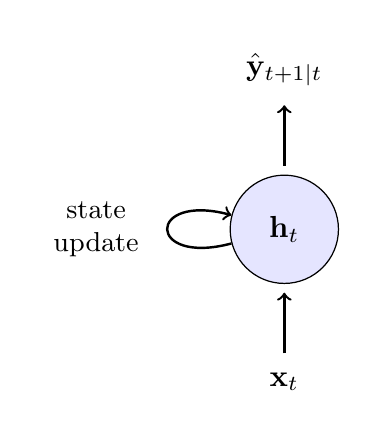
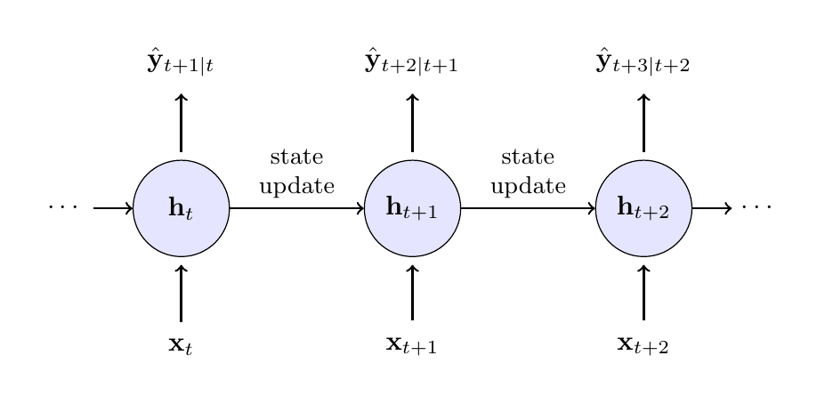
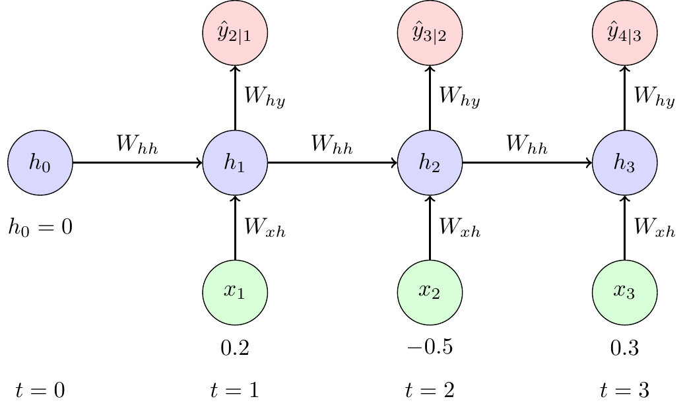

6 Recurrent Neural Networks
6.1 Overview
Feed-forward neural networks are flexible nonlinear maps from an input vector to an output, but they do not have a built-in state variable. If we want to use them for time-series forecasting, we usually have to create lagged inputs manually, such as \((y_{t-1}, y_{t-2}, \ldots, y_{t-p})\). That approach is often useful, but it fixes the memory length \(p\) in advance and treats temporal dependence as a feature-engineering problem.
Recurrent neural networks (RNNs) instead maintain a hidden state that is updated as new observations arrive. This makes them closer in spirit to econometric models with recursively updated states, such as ARMA, state-space, or GARCH-type models. The key difference is that the update function is learned from data and can be nonlinear and high-dimensional.
This chapter introduces the basic RNN architecture in a forecasting setting, interprets it through an econometric state-variable lens, and then explains the central difficulty of standard RNNs: vanishing gradients. That difficulty is the main reason why the next chapter moves to Long Short-Term Memory (LSTM) networks.
6.2 Roadmap
- We first define the forecasting setup and the information-set problem that RNNs are meant to address.
- We contrast a lagged feed-forward network with a recurrent state update.
- We introduce the RNN equations, parameter sharing, and the unrolled computational graph.
- We connect RNNs to econometric state-variable models such as GARCH.
- We discuss deterministic versus probabilistic outputs for forecasting applications.
- We finish with backpropagation through time, the vanishing gradient problem, and the motivation for LSTMs.
6.3 Forecasting Setup and the Information Set
Suppose we want to forecast a scalar outcome \(y_{t+1}\) using information available at time \(t\). Let \(\mathcal{F}_t\) denote that information set. In a macroeconomic or financial application, \(\mathcal{F}_t\) may contain past values of the target variable, lagged predictors, realized returns, volatility measures, survey variables, text-based indicators, and other signals known at the forecast origin.
A lagged feed-forward network uses a fixed window of this information, for example
\[ \hat{y}_{t+1} = f_\theta(y_t, y_{t-1}, \ldots, y_{t-p}, \mathbf{x}_t, \mathbf{x}_{t-1}, \ldots, \mathbf{x}_{t-p}). \]
This is a reasonable baseline. It is close to how econometricians build distributed-lag or autoregressive forecasting models. The limitation is that the lag length \(p\) must be chosen before estimation, and the model does not update an internal state as new observations arrive.
An RNN replaces the fixed lag window by a recursively updated summary:
\[ \mathbf{h}_t = \text{summary}_\theta(\mathbf{x}_1, \ldots, \mathbf{x}_t). \]
The hidden state \(\mathbf{h}_t\) is not observed and should not be interpreted too literally. It is a learned vector summary of the past that is useful for prediction.
For this course, the useful analogy is: an RNN is a nonlinear state-update model. Like a state-space model or a GARCH recursion, it carries information forward through a state variable. Unlike those classical models, the state update is not chosen by theory in a low-dimensional parametric form; it is learned as part of a neural network.
6.4 From a Lagged FNN to a Recurrent State
Recurrent Neural Networks (RNNs) solve this problem by introducing a loop. The network maintains a hidden state \(h\) (or “memory”), which captures information from all past steps. At each time step, the network updates this hidden state based on the current input and its previous state.
A feed-forward network with lagged inputs can approximate nonlinear autoregressive relationships, but it treats the chosen lag vector as the full input. If the relevant history changes over time or spans many periods, this fixed-window approach becomes limited.
An RNN uses the same update rule at every time step. At time \(t\), it takes the current input \(\mathbf{x}_t\) and the previous hidden state \(\mathbf{h}_{t-1}\) and produces a new hidden state \(\mathbf{h}_t\). This creates a recursive representation of the past:
\[ \mathbf{h}_t = g_\theta(\mathbf{h}_{t-1}, \mathbf{x}_t). \]
This state can then be used to produce a forecast, classification probability, or distributional parameter:
\[ \hat{y}_{t+1} = q_\theta(\mathbf{h}_t). \]
The essential point is that the model learns both the update rule and the predictive mapping.
6.5 RNN Architecture and Notation
The recurrence can be visualized in two ways: a compact form with a self-loop, representing the recurrence, and an “unrolled” form, which shows the flow of information through time.


The left panel in Figure 6.1 shows the compact representation: a recurrent link feeds the previous hidden state back into the model. The right panel shows the same model unrolled through time. Unrolling is mainly a computational device for training; it does not mean that the model has different parameters at different dates.
At each time step \(t\), define:
- \(\mathbf{x}_t \in \mathbb{R}^{D}\): The input vector at the current time step (e.g., today’s stock returns and trading volume).
- \(\mathbf{h}_{t-1} \in \mathbb{R}^{H}\): The hidden state from the previous time step, which acts as the network’s memory of the past.
- \(\mathbf{h}_t \in \mathbb{R}^{H}\): The new hidden state, calculated by combining the current input \(\mathbf{x}_t\) with the previous state \(\mathbf{h}_{t-1}\).
- \(\mathbf{y}_t \in \mathbb{R}^{O}\): The output at the current time step (e.g., the prediction for tomorrow’s volatility), produced from the current hidden state.
The update equations are:
\[ \begin{align} \mathbf{h}_t &= g(\mathbf{W}_{hh}\mathbf{h}_{t-1} + \mathbf{W}_{xh}\mathbf{x}_t + \mathbf{b}_h) \quad &\text{(Update memory)} \\ \mathbf{y}_t &= \mathbf{W}_{hy}\mathbf{h}_t + \mathbf{b}_y \quad &\text{(Produce output)} \end{align} \]
with the following parameters:
- \(\mathbf{W}_{hh} \in \mathbb{R}^{H \times H}\) (hidden-to-hidden weights)
- \(\mathbf{W}_{xh} \in \mathbb{R}^{H \times D}\) (input-to-hidden weights)
- \(\mathbf{W}_{hy} \in \mathbb{R}^{O \times H}\) (hidden-to-output weights)
- \(\mathbf{b}_h \in \mathbb{R}^{H}\), \(\mathbf{b}_y \in \mathbb{R}^{O}\) (bias terms)
In RNN implementations, the tanh function is often used as the activation function \(g\).
In the generic notation above, \(\mathbf{y}_t\) denotes the output produced after seeing \(\mathbf{x}_t\). In a one-step-ahead forecasting application, we would often interpret that output as \(\hat{y}_{t+1}\) or as parameters of the predictive distribution for \(y_{t+1} \mid \mathcal{F}_t\).
Key Properties
- Parameter Sharing: The same weight matrices (\(\mathbf{W}_{hh}, \mathbf{W}_{xh}, \mathbf{W}_{hy}\)) and biases are used at every time step. This makes the model efficient and allows it to generalize across sequences of different lengths.
- Memory: The hidden state \(\mathbf{h}_t\) is the crucial component that allows information to persist, enabling the network to learn from context that appeared many steps in the past.
6.6 Econometric State-Variable Interpretation
An RNN can be viewed as a flexible nonlinear generalization of classical time-series models with recursively updated states. A useful benchmark is the GARCH model of Bollerslev (1986).
In the GARCH(1,1) model, the latent conditional variance of stock returns is modeled as:
\[ \sigma_t^2 = \omega + \alpha \varepsilon_{t-1}^2 + \beta \sigma_{t-1}^2 \]
Here, the state is the previous conditional variance \(\sigma_{t-1}^2\), and the update rule is a simple linear function of the previous squared innovation and previous variance.
An RNN-style volatility model could instead use
\[ \begin{align} \mathbf{h}_t &= \tanh(\mathbf{W}_{hh}\mathbf{h}_{t-1} + \mathbf{W}_{xh}\mathbf{x}_t + \mathbf{b}_h) \\ \sigma_{t+1}^2 &= \text{softplus}(\mathbf{W}_{hy}\mathbf{h}_t + \mathbf{b}_y), \end{align} \]
where \(\mathbf{x}_t\) might contain lagged returns, squared returns, realized volatility measures, or macro-financial predictors known at time \(t\). The hidden state \(\mathbf{h}_t\) is a high-dimensional vector that learns a nonlinear summary of the relevant history. The softplus transformation ensures a positive variance forecast.
The analogy is useful, but it should not be pushed too far. In a GARCH model, the conditional variance has a direct structural interpretation within a specified conditional distribution. In a standard RNN, the hidden state is primarily a predictive representation. It becomes a probabilistic econometric model only after we specify how the output maps into a conditional distribution or likelihood.
The hidden state \(\mathbf{h}_t\) plays a role similar to a state vector in a state-space model or a volatility state in GARCH. The difference is that its components are learned predictive features, not parameters with a direct one-to-one econometric interpretation.
6.7 Outputs and Loss Functions
The output layer determines what kind of forecasting object the RNN produces. For a conditional mean forecast, we can use a linear output
\[ \hat{y}_{t+1} = \mathbf{W}_{hy}\mathbf{h}_t + \mathbf{b}_y \]
and train by minimizing squared loss. For a binary event, such as recession prediction, we can pass the output through a sigmoid and train with cross-entropy. For a probabilistic forecast, the output should parameterize a distribution. For example, for demeaned returns \(\varepsilon_{t+1}\):
\[ \varepsilon_{t+1} \mid \mathcal{F}_t \sim \mathcal{N}(0, \sigma_{t+1}^2), \qquad \sigma_{t+1}^2 = \text{softplus}(\mathbf{W}_{hy}\mathbf{h}_t + \mathbf{b}_y). \]
This distinction matters in econometrics. A deterministic RNN trained by squared loss gives a point forecast. A distributional RNN trained by negative log-likelihood gives a predictive distribution that can be evaluated with the scoring rules from the predictive-distribution chapter.
For time-series applications, \(\mathbf{x}_t\) and \(\mathbf{h}_t\) must only use information available at the forecast origin. The recurrent architecture does not remove the usual econometric concern about look-ahead bias, revised macroeconomic data, publication lags, or temporal leakage in validation.
If a macroeconomic predictor is published with a one-month delay and later revised, what should be included in \(\mathcal{F}_t\) when training an RNN for real-time forecasting?
\(\mathcal{F}_t\) should contain only the real-time data vintage available at the forecast origin. With a one-month publication delay, the current-month value is not available, and later revisions are also unavailable. The RNN input should therefore use the last released vintage and respect the release calendar, rather than the revised historical series that becomes available only later.
6.8 Training Through Time
Training an RNN presents a unique challenge due to its recurrent nature. Because the same weight matrices (\(\mathbf{W}_{hh}, \mathbf{W}_{xh}\)) are applied at every time step, their influence on the final loss is cumulative. The algorithm used to handle this is Backpropagation Through Time (BPTT).
The core idea of BPTT is to unroll the network through time, as shown in Figure 6.1. This conceptually transforms the RNN into a deep feed-forward network where each time step becomes a layer, but with the critical constraint that the weights are shared across all layers. Once unrolled, standard backpropagation can be applied.
If the loss is evaluated at the final time \(T\), the gradient for a recurrent weight matrix is the sum of its contributions across time. For example, the gradient with respect to \(\mathbf{W}_{hh}\) can be written schematically as:
\[ \frac{\partial L_T}{\partial \mathbf{W}_{hh}}=\sum_{t=1}^{T}\frac{\partial L_T}{\partial \mathbf{h}_t}\frac{\partial \mathbf{h}_t}{\partial \mathbf{W}_{hh}} \]
The term \(\frac{\partial L_T}{\partial \mathbf{h}_t}\) captures how an adjustment to the hidden state at an early time \(t\) affects the final loss at time \(T\). This requires propagating the gradient backwards through every intermediate step, leading to a long product of Jacobian matrices:
\[ \frac{\partial \mathbf{h}_t}{\partial \mathbf{h}_k} = \prod_{i=k+1}^{t} \frac{\partial \mathbf{h}_i}{\partial \mathbf{h}_{i-1}} = \prod_{i=k+1}^{t} \mathbf{W}_{hh}^{\top}\,\operatorname{diag}\big(g'(\mathbf{z}_i)\big) \]
where \(g'\) is the derivative of the activation function (e.g., \(\tanh'\)) and \(\mathbf{z}_i\) is its input at step \(i\). The detailed derivations for a one-dimensional hidden state can be found in a self-study exercise at the end of this section.
6.9 Vanishing Gradients as the Main Limitation
The long product of Jacobians is the source of the vanishing gradient problem. If the norms of the recurrent weight matrix and the activation derivatives are, on average, less than one, repeated multiplication causes the gradient signal to shrink exponentially as it propagates backwards through time. Consequently, contributions from early time steps (\(t \ll T\)) become so small that they are effectively zero.
For econometric forecasting, this is the central limitation of a plain RNN. The model may have a recursive state, but the training algorithm may still fail to learn long-run dependence because the relevant gradients disappear before they can influence the parameters. In practice, parameter updates become dominated by recent observations, which makes the model behave more like a short-memory nonlinear autoregression than a robust long-memory sequence model.
The point of this chapter is not that plain RNNs are the best architecture for macroeconomic or financial sequences. The point is that plain RNNs make the core problem visible: learning long-run dependence requires gradients to carry information across many time steps. LSTMs modify the state update by adding gates and a cell state so that information can be preserved more reliably.
6.10 Summary
- A recurrent neural network augments a feed-forward network with a hidden state that is updated over time.
- In forecasting applications, the hidden state is a learned summary of the information set available at the forecast origin.
- Econometrically, an RNN can be interpreted as a flexible nonlinear state-update model, similar in spirit to GARCH or state-space recursions but less tightly specified.
- A standard RNN output is deterministic unless we combine it with a probabilistic output layer and a likelihood.
- Training uses backpropagation through time, which applies the chain rule to an unrolled sequence of shared-parameter hidden states.
- The main limitation of plain RNNs is the vanishing gradient problem: early time steps can have almost no influence on parameter updates for long sequences.
- The vanishing gradient problem is the main conceptual bridge to LSTM networks in the next chapter.
- Treating an RNN hidden state as directly interpretable in the same way as a scalar GARCH variance or an AR state.
- Forgetting that a deterministic RNN forecast is not automatically a full predictive distribution.
- Randomly shuffling time-series observations before training or evaluation, thereby destroying the temporal information structure or leaking future information.
- Assuming that a plain RNN can learn very long-run dependence just because the hidden state is recursively updated.
- Confusing the unrolled computational graph used for training with a model that has different parameters at each time step; standard RNNs share parameters over time.
6.11 Exercises
In this exercise, we examine the vanishing gradient problem in RNNs. Consider a simple RNN with one-dimensional hidden state \(h_t = \tanh(W_h h_{t-1} + W_x x_t + b)\) and loss \(L_T\) at the final time step \(T\).
Tasks:
- Derive the gradient formula for backpropagation through time. Using the chain rule, derive the expression for \(\frac{\partial L_T}{\partial W_h}\). Show that it involves the term \(\frac{\partial h_T}{\partial h_t}\) for each time step \(t = 1, 2, \ldots, T\) and express it as a product of derivatives.
- Prove gradient vanishing conditions. Show that \(\left |\frac{\partial h_T}{\partial h_t}\right | \leq | W_h |^{T-t}\) and explain why this leads to exponentially vanishing gradients when \(|W_h | < 1\).
- Analyze learning implications. Explain why vanishing gradients prevent RNNs from learning long-term dependencies, including the effect on parameter updates for early time steps and typical sequence length limitations.
Technically at exam level. However, it’s hard to come up with variations of this exercise. Hence, any exam question would be very close to this setup.
For part 1, use the chain rule to express \(\frac{\partial L_T}{\partial W_h}\). Remember that the weight \(W_h\) affects the loss through its influence on all hidden states from time 1 to \(T\).
The key insight is that \(\frac{\partial L_T}{\partial W_h} = \sum_{t=1}^T \frac{\partial L_T}{\partial h_T} \frac{\partial h_T}{\partial h_t} \frac{\partial h_t}{\partial W_h}\).
For the product of derivatives, think about how \(h_T\) depends on \(h_t\) through the chain: \(h_t \to h_{t+1} \to h_{t+2} \to \cdots \to h_T\).
For part 2, you need to bound the absolute value of a product of derivatives. Use the property that \(|ab| = |a||b|\).
Each derivative \(\frac{\partial h_k}{\partial h_{k-1}}\) involves both the weight \(W_h\) and the derivative of the activation function. What’s the maximum value of \(\tanh'(z)\)?
For part 3, think about what happens to the gradient terms \(\frac{\partial L_T}{\partial W_h}\) when the \(\frac{\partial h_T}{\partial h_t}\) terms become very small for early time steps. How does this affect which time steps contribute most to parameter updates?
The goal is to find \(\frac{\partial L_T}{\partial W_h}\). The key challenge is that the weight \(W_h\) is used at every time step, so its influence on the final loss \(L_T\) is the sum of its influence through each step.
The final loss \(L_T\) is a function of the last hidden state, \(h_T\). But \(h_T\) is a function of \(h_{T-1}\) and \(W_h\). And \(h_{T-1}\) is a function of \(h_{T-2}\) and \(W_h\), and so on. This means that the final loss \(L_T\) is ultimately a function of \(W_h\) through its influence on every single hidden state:
\(L_T = f(h_T(h_{T-1}(...h_1(W_h)...), W_h), W_h)\)
Since \(W_h\) contributes to the final loss through all these paths, we have by the multivariate chain rule:
\[ \frac{\partial L_T}{\partial W_h} = \sum_{t=1}^T \frac{\partial L_T}{\partial h_t} \frac{\partial h_t}{\partial W_h} \]
Calculating the Direct Influence
The term \(\frac{\partial h_t}{\partial W_h}\) represents the direct influence of \(W_h\) on \(h_t\) at a single time step. From the RNN equation \(h_t = \tanh(W_h h_{t-1} + W_x x_t + b)\), this is straightforward:
\[ \frac{\partial h_t}{\partial W_h} = \tanh'(W_h h_{t-1} + W_x x_t + b) \cdot h_{t-1} \]
Calculating the Indirect Influence (The Chain Rule Through Time)
The term \(\frac{\partial L_T}{\partial h_t}\) is more complex. It measures how a change in an early hidden state \(h_t\) propagates all the way to the end to affect the final loss \(L_T\). We must use the chain rule through the sequence of hidden states:
\[ \frac{\partial L_T}{\partial h_t} = \frac{\partial L_T}{\partial h_T} \frac{\partial h_T}{\partial h_{T-1}} \frac{\partial h_{T-1}}{\partial h_{T-2}} \cdots \frac{\partial h_{t+1}}{\partial h_t} = \frac{\partial L_T}{\partial h_T} \prod_{k=t+1}^T \frac{\partial h_k}{\partial h_{k-1}} \]
This long chain of derivatives is the core of backpropagation through time.
Now we can write the full expression for the gradient. Substituting our product form back into the sum at the beginning, we get
\[ \frac{\partial L_T}{\partial W_h} = \sum_{t=1}^T \underbrace{\left( \frac{\partial L_T}{\partial h_T} \prod_{k=t+1}^T \frac{\partial h_k}{\partial h_{k-1}} \right)}_{\frac{\partial L_T}{\partial h_t}} \underbrace{\left( \frac{\partial h_t}{\partial W_h} \right)}_{\text{direct effect}} \]
This formula explicitly shows that the gradient contribution from each time step \(t\) involves a product of terms that bridges the time gap from \(t\) to \(T\).
Each derivative in the product has the form:
\[ \frac{\partial h_k}{\partial h_{k-1}} = \tanh'(W_h h_{k-1} + W_x x_k + b) \cdot W_h \]
Since \(\tanh'(z) = 1 - \tanh^2(z) \leq 1\), its value is always between 0 and 1. We can bound the absolute value of the derivative:
\[ \left|\frac{\partial h_k}{\partial h_{k-1}}\right| = |\tanh'(\cdot)| \cdot |W_h| \leq 1 \cdot |W_h| = |W_h| \]
The key term \(\frac{\partial h_T}{\partial h_t}\) for \(t < T\) represents the product of derivatives through time:
\[ \left|\frac{\partial h_T}{\partial h_t}\right| = \left|\prod_{k=t+1}^T \frac{\partial h_k}{\partial h_{k-1}}\right| \leq |W_h|^{T-t} \]
Exponential vanishing: When \(|W_h| < 1\), we have \(|W_h|^{T-t} \to 0\) exponentially as the time gap \((T-t)\) increases. This proves the exponential decay of gradient magnitudes.
The exponential decay has three critical effects on learning:
Dominated parameter updates: Since \(\frac{\partial L_T}{\partial W_h} = \sum_{t=1}^T \frac{\partial L_T}{\partial h_T} \frac{\partial h_T}{\partial h_t} \frac{\partial h_t}{\partial W_h}\), when \(\frac{\partial h_T}{\partial h_t}\) becomes exponentially small for early \(t\), the gradient sum becomes dominated by recent time steps (large \(t\)).
Loss of long-term information: The network cannot learn patterns where important information at time \(t\) influences the loss at time \(T\) when \(T-t\) is large, because the gradient signal carrying this information becomes negligibly small.
Practical sequence limitations: Empirically, standard RNNs can learn dependencies spanning roughly 5-10 time steps reliably. Beyond this, the exponential decay makes learning ineffective, limiting their applicability for sequences with long-term dependencies.
The fundamental issue is that learning requires non-negligible gradients to update parameters, but the exponential decay ensures that distant time steps contribute virtually nothing to parameter updates.
Consider a simple RNN with a single hidden unit processing a sequence of length 3. The RNN has the following parameters:
- Weight for input-to-hidden: \(W_{ih} = 0.5\)
- Weight for hidden-to-hidden: \(W_{hh} = 0.8\)
- Bias for hidden unit: \(b_h = 0.1\)
- Weight for hidden-to-output: \(W_{ho} = 1.2\)
- Bias for output: \(b_o = 0.0\)
The activation function for the hidden unit is \(\tanh\) and the output is linear (no activation). Given the input sequence \(\mathbf{x} = [0.2, -0.5, 0.3]\), compute the hidden states and outputs at each time step. Assume the initial hidden state \(h_0 = 0\).

Exam level difficulty
Work through each time step sequentially. Remember that the hidden state from the previous time step becomes input to the current time step. Use the fact that \(\tanh(0.2) \approx 0.197\), \(\tanh(0.008) \approx 0.008\), and \(\tanh(0.256) \approx 0.251\) to check your calculations.
The RNN equations are:
\[ \begin{aligned} h_t &= \tanh(W_{ih} x_t + W_{hh} h_{t-1} + b_h) \\ y_t &= W_{ho} h_t + b_o \end{aligned} \]
Let’s compute step by step:
Time step 1 (\(t=1\)):
\[ \begin{aligned} h_1 &= \tanh(0.5 \cdot 0.2 + 0.8 \cdot 0 + 0.1) \\ &= \tanh(0.1 + 0 + 0.1) \\ &= \tanh(0.2) \\ &\approx 0.197 \end{aligned} \]
\[ \begin{aligned} y_1 &= 1.2 \cdot 0.197 + 0.0 \\ &\approx 0.236 \end{aligned} \]
Time step 2 (\(t=2\)):
\[ \begin{aligned} h_2 &= \tanh(0.5 \cdot (-0.5) + 0.8 \cdot 0.197 + 0.1) \\ &= \tanh(-0.25 + 0.158 + 0.1) \\ &= \tanh(0.008) \\ &\approx 0.008 \end{aligned} \]
\[ \begin{aligned} y_2 &= 1.2 \cdot 0.008 + 0.0 \\ &\approx 0.010 \end{aligned} \]
Time step 3 (\(t=3\)):
\[ \begin{aligned} h_3 &= \tanh(0.5 \cdot 0.3 + 0.8 \cdot 0.008 + 0.1) \\ &= \tanh(0.15 + 0.006 + 0.1) \\ &= \tanh(0.256) \\ &\approx 0.251 \end{aligned} \]
\[ \begin{aligned} y_3 &= 1.2 \cdot 0.251 + 0.0 \\ &\approx 0.301 \end{aligned} \]
Final Results: - Hidden states: \(h_1 \approx 0.197\), \(h_2 \approx 0.008\), \(h_3 \approx 0.251\) - Outputs: \(y_1 \approx 0.236\), \(y_2 \approx 0.010\), \(y_3 \approx 0.301\)